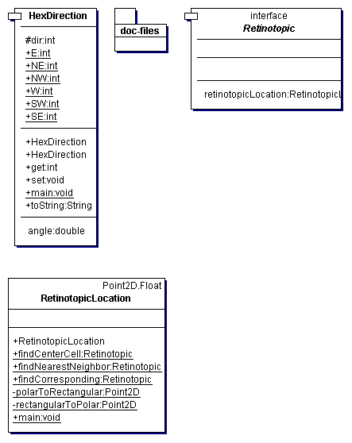

Point2D).
Static methods in {@link ch.unizh.ini.friend.topology.RetinotopicLocation} can find cells in the same or different layer that are corresponding, in a certain direction, etc.
{@link ch.unizh.ini.friend.topology.HexDirection} specifies a wrapping direction in the base hex coordinate system.
In order to use this notion of retinotopy, cells must correctly implement {@link ch.unizh.ini.friend.topology.Retinotopic}, e.g., they must have a {@link ch.unizh.ini.friend.topology.RetinotopicLocation} and correctly set it. This initialization is done, for example, in the static methods that construct arrays of cells from a preceeding layer.
The package UML is
